הכירו את מערכת נויה: המהפכה הדיגיטלית בניהול ביטוח עובדים זרים
ניהול ביטוח בריאות לעובדים זרים מעולם לא היה פשוט, מהיר ושקוף יותר.
בעולם שבו זמן שווה כסף ויעילות היא שם המשחק, מערכת נויה מציעה פלטפורמה אחודה ומתקדמת (Paperless), שמלווה את כל מחזור החיים של העובד הזר בהיבט הביטוחי — מקליטתו ועד לניהול השוטף של פוליסת הבריאות שלו.
למה לעבור לניהול ב״נויה״?
1) הכל בכף היד — אפליקציה ייעודית ו־Mobile First
המערכת זמינה בכל רגע ובכל מקום. עם אפליקציה ייעודית ב־App Store וב־Google Play, השליטה בנתונים נמצאת אצלכם בכיס.
2) לוח בקרה ניהולי חכם
מרכז בקרה מתקדם המציג תמונת מצב מצרפית של כלל העובדים. מבט חטוף לנתונים קריטיים וביצוע פעולות תפעוליות ישירות מתוך הממשק — בלי מעבר בין מסכים מורכבים.
3) שקיפות מלאה: פורטל סוכן ופורטל מעסיק
מערכת נויה מחברת בין כל הגורמים הרלוונטיים לשרשרת העבודה:
- פורטל מעסיק: גישה עצמאית למידע על העובדים, סטטוסים של פוליסות (פעיל/פג תוקף) והורדת מסמכים באופן עצמאי.
- פורטל סוכן: כלי עבודה עוצמתי לניהול תורי עבודה, מעקב אחר חתימות וניהול תיקי לקוחות.
- תקשורת ישירה: ערוץ עבודה מהיר ויעיל בין הסוכן למעסיק לקיצור תהליכים ושיפור השירות.
4) חוויית משתמש דיגיטלית מקצה לקצה
- הצהרות בריאות דיגיטליות: בלי ניירת פיזית. שליחה ב־WhatsApp או במייל, חתימה דיגיטלית בנייד והזרמה אוטומטית של הנתונים למערכת.
- תמיכה רב־לשונית: הצהרות מותאמות לנייד במגוון שפות (אנגלית, סינית, רוסית, תאילנדית ועוד), עם אפשרות תרגום לעברית בלחיצת כפתור לנוחות העובד והנציג.
- מערכת ידידותית: ממשק נקי, אינטואיטיבי וקל לתפעול שאינו דורש הכשרה ממושכת.
5) ניתוח נתונים ודוחות
שכבת דוחות עשירה ומגוונת, מותאמת אישית למעסיק ולסוכן, עם מעקב צמוד אחר הוצאות, תפוגות ביטוח וסטטיסטיקות ניהוליות.
לוח בקרה ניהולי
תמונת מצב עסקית בזמן אמת — לפעולות, לא רק לנתונים.
לוח הבקרה הוא מסך הכניסה שלכם למערכת: תצוגה מסכמת וברורה של מה שדורש טיפול, מה מתקדם ואיפה יש הזדמנות לשפר שירות. במקום לרדוף אחרי מספרים מפוזרים, אתם רואים את התמונה המלאה — ומתחילים לעבוד.
כל כרטיס בלוח מוביל לדוח מפורט מתחתיו: משם אפשר לעמוק לתוך הפרטים, לערוך ולבצע פעולות תפעוליות — השלמת פרטים לחסרים, חידוש פוליסות, טיפול בהצהרות בריאות (מפורט בהמשך המדריך) ועוד — בלי לזלוג בין מסכים אינסופיים.

הוספת מעסיק חדש
מעסיק חדש בקצב עבודה מקצועי — עם ברירות מחדל שחוסכות זמן בהמשך הדרך.
בתפריט מעסיקים בוחרים הוספת מעסיק ונפתח טופס מסודר. מילוי מדויק של שדות החובה כבר בשלב הזה מונע תקלות ומקצר את הטיפול בפוליסה ובעובדים בהמשך.
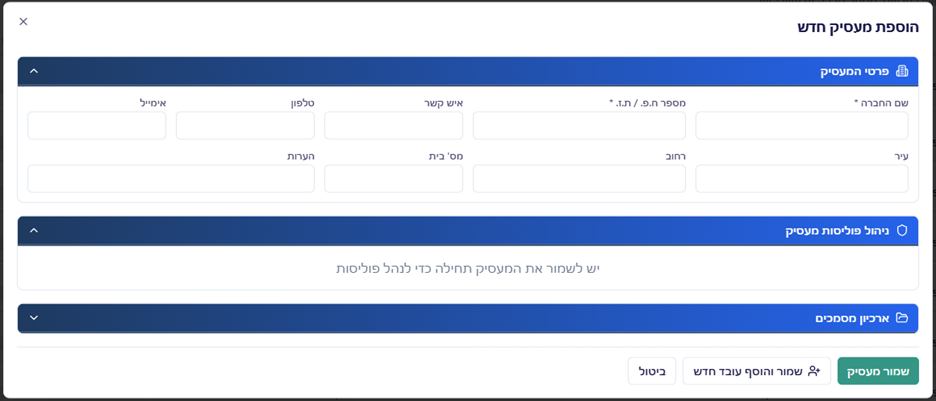
לאחר מילוי הפרטים לוחצים שמור ועוברים לניהול הפוליסה תחת הכרטיסייה ניהול פוליסה למעסיק.
מיד לאחר שמירת המעסיק נפתח חלון להוספת הפוליסה. כאן חשוב לדייק: ארץ מוצא וקופת חולים יהפכו לברירת המחדל לכל העובדים תחת המעסיק, וגם ישפיעו על שפת ברירת המחדל להצהרת הבריאות — בחירה נכונה כאן חוסכת עדכונים חוזרים.
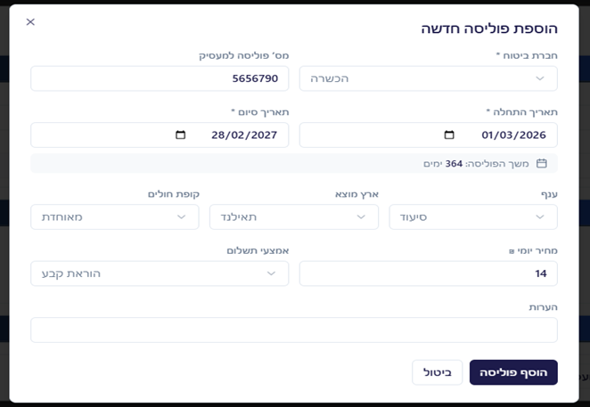
רוצים להרחיב את כוח האדם? אפשר להוסיף עובדים חדשים ישירות מכרטיס המעסיק בלחיצה על הוסף עובד חדש למעסיק זה — זרימה רציפה ממעסיק לעובד.
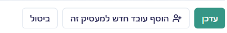
לבסוף, בתפריט מעסיקים וודאו שהמעסיק מופיע ברשימה — ואתם מוכנים לשלב הבא.
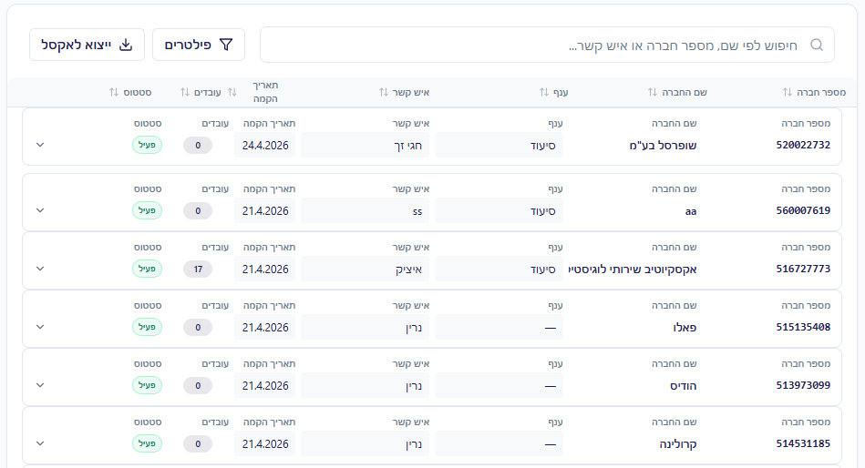
הוספת עובד
מעובד בודד ועד טעינה המונית — והמשך עם הצהרת בריאות דיגיטלית בשפה הנכונה.
נויה נותנת לכם גמישות: עובד אחד דרך הממשק, או קובץ אקסל לארגונים בצמיחה. בכל המסלולים המטרה זהה — רישום מהיר, מעקב ברור ופחות חיכוך מול העובד והמעסיק.
אפשרות א׳ — מתוך כרטיס המעסיק
נכנסים לפרטי המעסיק ולוחצים על הוסף עובד חדש למעסיק זה בתחתית הכרטיס.
אפשרות ב׳ — מתפריט העובדים
בתפריט עובדים, בחלק העליון של המסך, לוחצים על כפתור ההוספה.
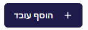
אפשרות ג׳ — טעינה המונית (אוטומציות)
מיועדת לארגונים עם הרבה רישומים בבת אחת. בתפריט אוטומציות בוחרים את אפשרות טעינת העובדים (כפי שמופיע במסך).
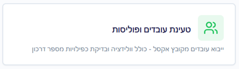
במסך שנפתח אפשר להוריד תבנית אקסל, למלא אותה לפי השדות ולהעלות חזרה — חיסכון משמעותי בזמן הקלדה חוזרת.
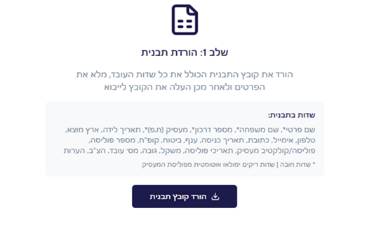
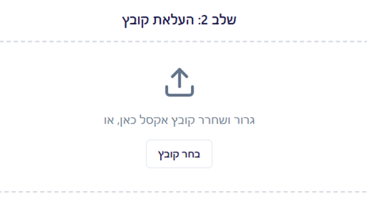
מסך הוספת עובד בודד
ממלאים את כל שדות החובה בפרטי העובד ושומרים. אחרי השמירה עוברים לניהול הפוליסה של אותו עובד.
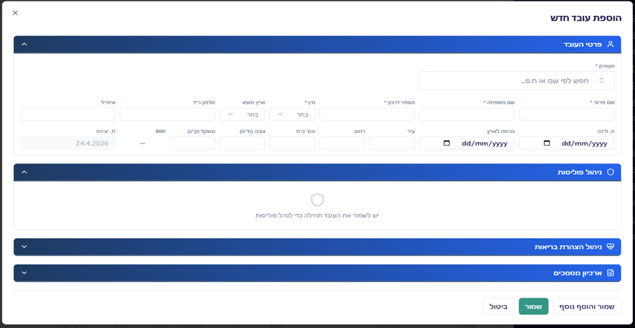
במסך ניהול הפוליסה מזינים את פרטי הפוליסה. אם עדיין אין פוליסה ואין הצהרת בריאות — מתחילים בכרטיסייה ניהול הצהרת בריאות.
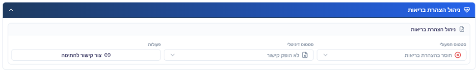
יוצרים קישור חתימה לעובד בלחיצה על צור קישור לחתימה.
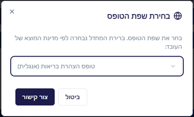
השפה נבחרת אוטומטית לפי פרטי העובד או המעסיק; אפשר לעבור לשפה אחרת מתוך תפריט הבחירה — מגוון רחב של שפות, כדי שהעובד יבין ויחתום בביטחון. לחיצה על צור קישור מפיקה את הקישור לשליחה.
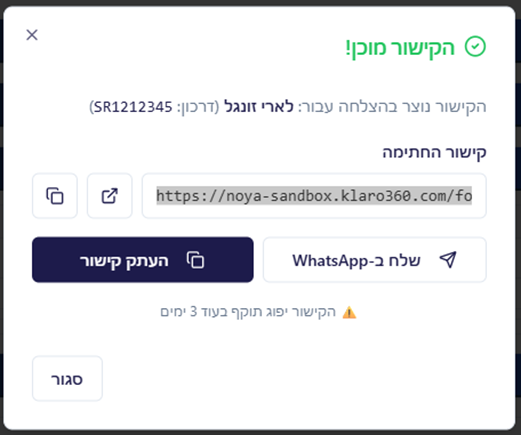
לאחר יצירת הקישור מוצג חיווי שהקישור הופק.
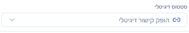
שולחים ב־WhatsApp או מעתיקים לכל ערוץ אחר. כשהעובד נכנס לקישור, הוא מזין את ארבע הספרות האחרונות של מספר הדרכון לאימות; לאחר מכן נפתחת הצהרת הבריאות בשפה שנבחרה — חוויה מוכרת לעובד, שליטה מלאה לסוכן.

בדוגמה נבחרה שפה זרה; השדות מסומנים מראש לנוחות. בתחתית העובד חותם על המסך ושולח — בלי הדפסות ובלי איבוד מסמכים.
ניתן להחליף את שפת ההצהרה לעברית (כפתור הגלובוס בפינה) כדי לסייע לעובד או לנציג בשיחה — שירות פרימיום בלי עלות נוספת.
לאחר שליחה וחתימה, הסטטוס במערכת מתעדכן להתקבלה הצהרת בריאות. יש לבדוק את התוכן ולקבוע את הסטטוס התפעולי.
כשההצהרה תקינה — מפיקים פוליסה אצל חברת הביטוח, מקבלים מספר פוליסה ומספר קופת חולים, ומעדכנים במערכת. משם אפשר להפיק לעובד כרטיס קופת חולים ואישור ביטוח — סגירת מעגל מקצועית מול העובד והמעסיק.
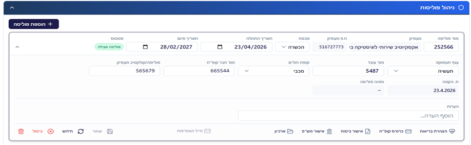
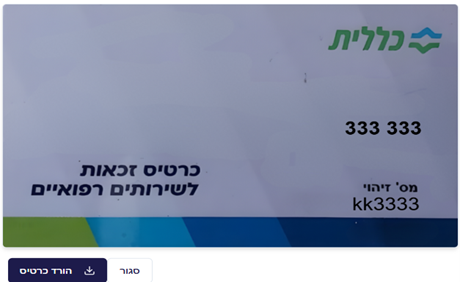
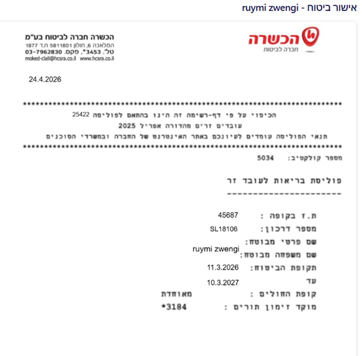
פורטל מעסיקים
מעסיקים מקבלים עצמאות מבוקרת — ואתם שומרים על בקרה ואישור לפני כל שינוי.
פורטל המעסיקים נותן למעסיק חוויה דומה ללוח הבקרה שלכם, עם הבדל מהותי: כל שינוי משמעותי עובר דרך בקשה אליכם. כך נשמר סטנדרט שירות, צנרת עבודה ברורה ותיעוד מלא — בלי לוותר על נוחות למעסיק.
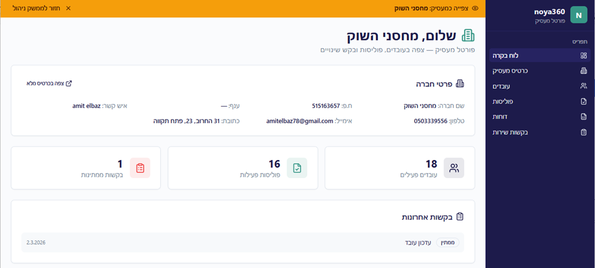
כרטיס המעסיק בפורטל
המעסיק רואה פרטי מעסיק, פרטי פוליסה וסטטוס, ואת ארכיון המסמכים. ישירות מהפורטל הוא יכול לנהל מסמכים בארכיון: הוספה, מחיקה והורדה. כל שאר השינויים — דרך בקשה דיגיטלית שאתם מטפלים בה.
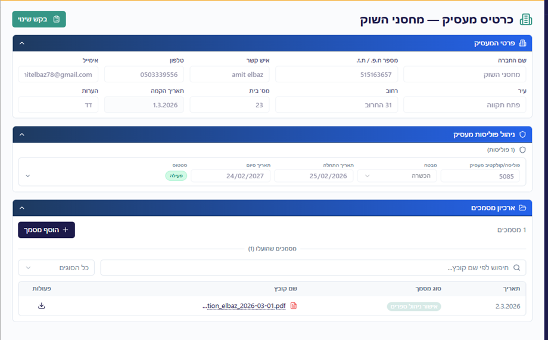
בלחיצה על בקשת שינוי נפתח טופס הגשה מסודר.
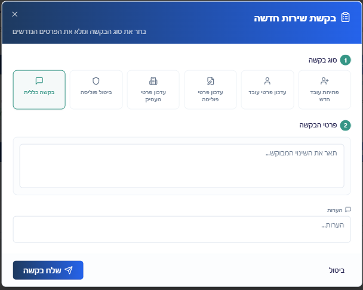
במסך אחד אפשר להגיש בקשות מגוונות: הוספת עובדים, עדכון פרטים או פנייה כללית. בתהליך הוספת עובד המעסיק יכול למלא פרטים, להפעיל את מסלול הצהרת הבריאות הדיגיטלית ולצרף מסמכים לארכיון — ללא ניירת, עם קיצור זמן עד הפוליסה ופחות עומס על נציגי הסוכנות.
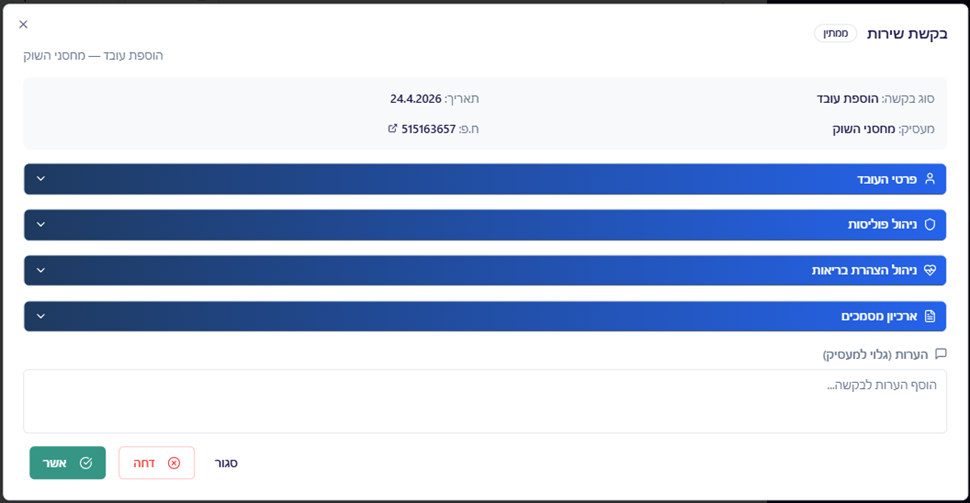
בסיום, אישור פותח אצלכם בקשה בסטטוס ממתין. בלוח הבקרה של המעסיק מתעדכן מספר הבקשות הפתוחות; אצלכם הבקשה מגיעה מיד לטיפול.
אתם בוחרים לאשר או לדחות; הסטטוס מתעדכן אוטומטית. כשמדובר בהוספת עובד והמעסיק השלים הצהרת בריאות חתומה — נשאר לכם להקים את הפוליסה ולעדכן מספר פוליסה וקופת חולים. זרימת עבודה ברורה, מדידה ומקצועית.
עוד יכולות בפורטל המעסיק:
צפייה בפרטי עובדים, בפוליסות ובסטטוסים; הפקת קישורי הצהרת בריאות, כרטיסי קופת חולים ואישורי ביטוח.
דוחות למעסיק
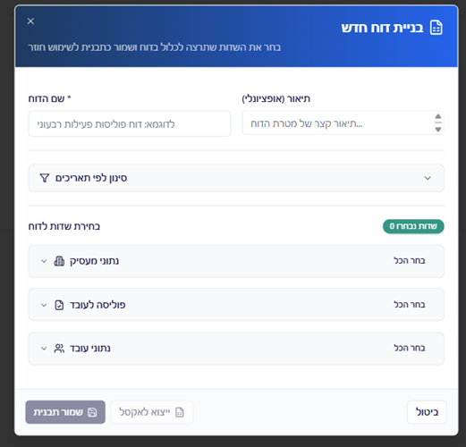
בכל כרטיסיית משנה בוחרים אילו שדות יופיעו בדוח; לאחר ההפקה הדוח נשמר ברשימה. ניתן לייצא ל־Excel בלחיצה על ייצוא לאקסל, לצפות בתצוגה מקדימה או למחוק דוח ישן — שליטה מלאה בנתונים שהמעסיק רואה.
תצוגת דוחות ברשימה:
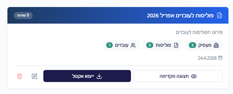
תצוגה מקדימה לפני הורדה:
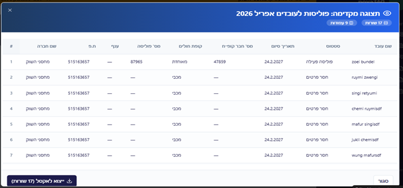
דוחות לסוכן
הפקת דוחות מותאמים אישית — כדי להציג נתונים, לא רק לאסוף אותם.
בתפריט הראשי נכנסים לדוחות. במסך הראשי מופיעים דוחות שהופקו בעבר, עם אפשרות לצפייה, ייצוא והפקת דוח חדש — כלי עבודה למי שמנהל תיק אמיתי, לא רק רשומות.
רשימת דוחות קיימים:
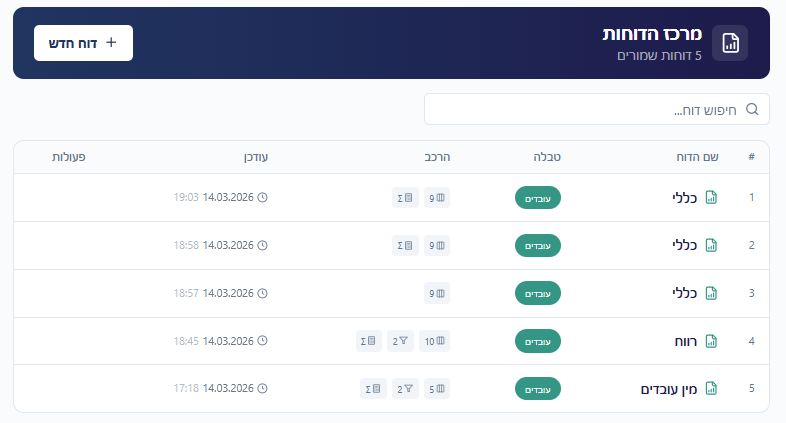
מגוון סוגי דוחות ושדות לבחירה מאפשר לכם להתאים כל ייצוא לשאלה העסקית: ליווי מעסיק, ביקורת תיקים או ניתוח מגמות.
להפקת דוח חדש לוחצים דוח חדש ונפתח אשף הבחירה.
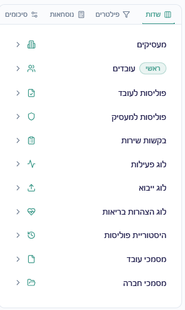
בכל כרטיסיית משנה בוחרים את השדות שייכללו בדוח; בסיום מפיקים — והדוח מתווסף לרשימה. כל דוח ניתן להורדה כ־Excel דרך ייצוא לאקסל, לתצוגה מקדימה או למחיקה, בדיוק כמו בפורטל המעסיק — אחידות חווייתית בכל המערכת.